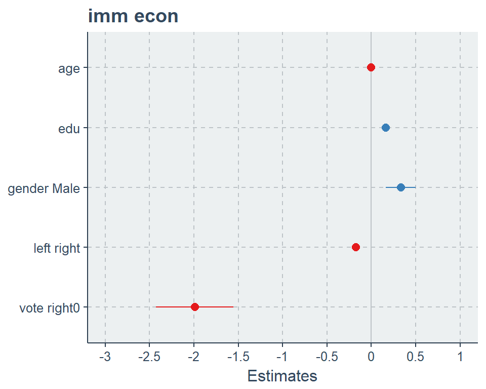
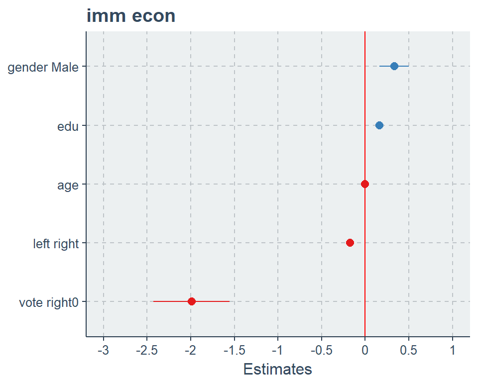
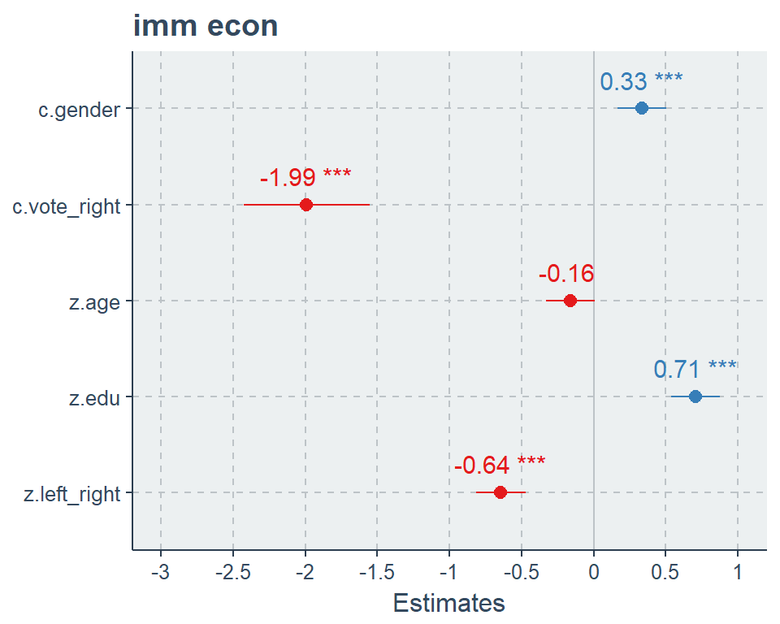
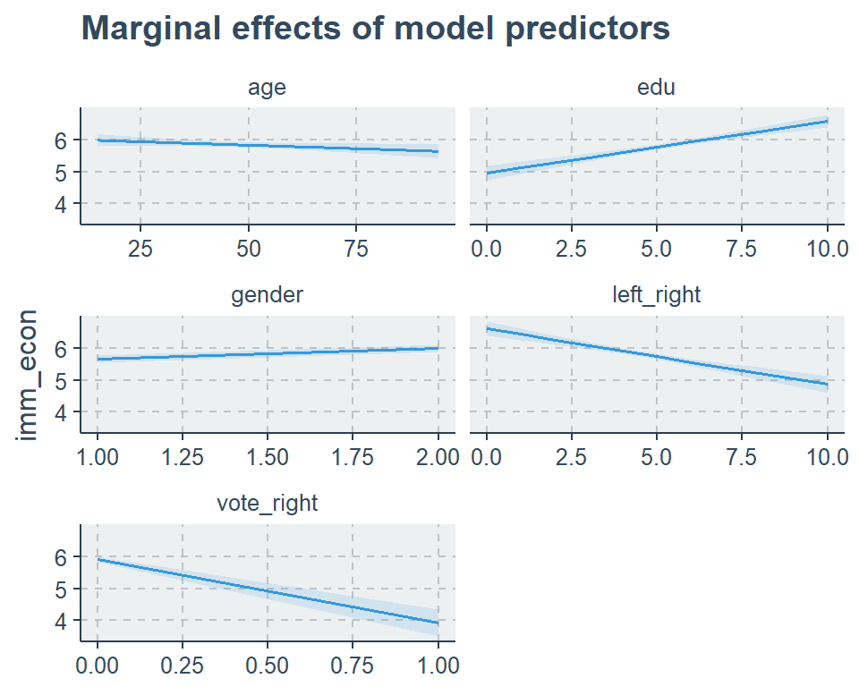
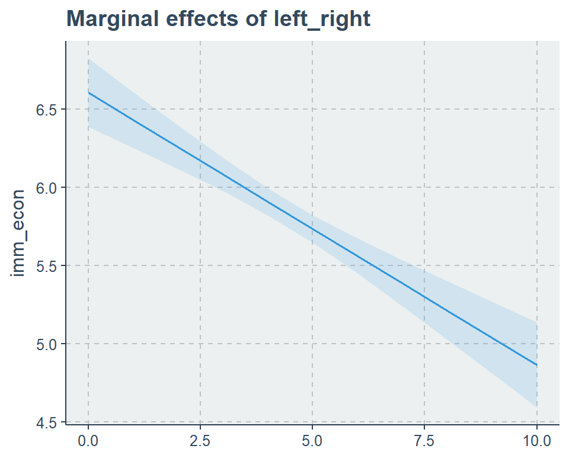
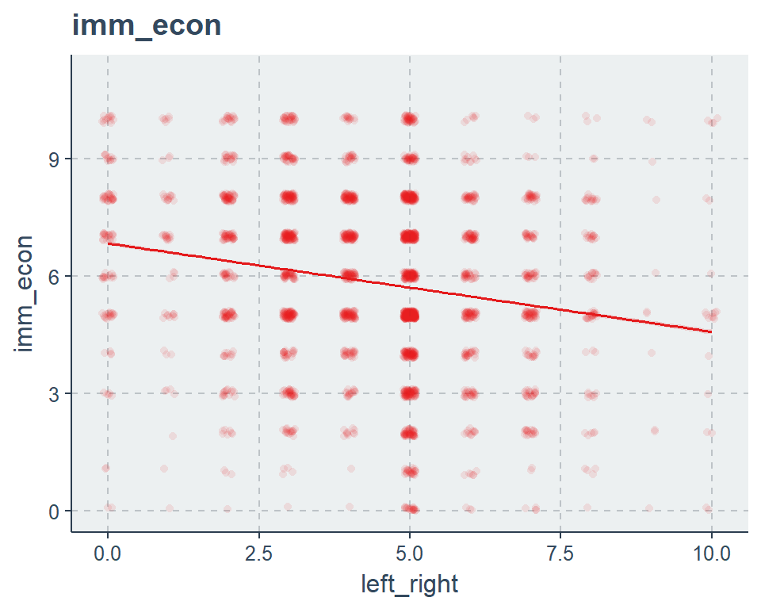
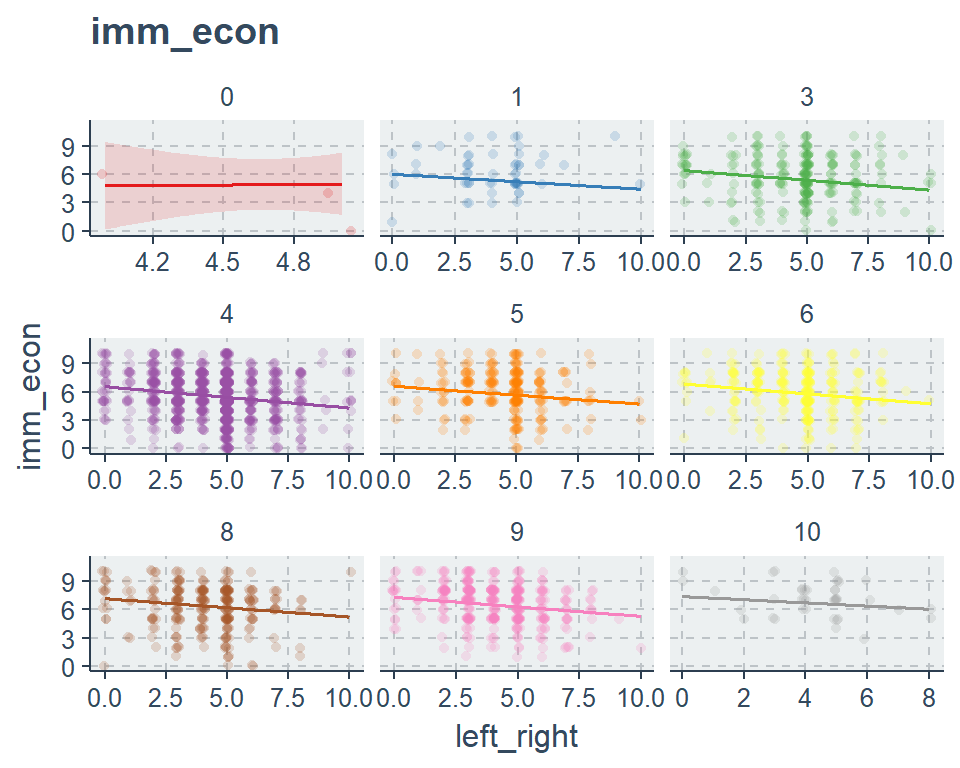
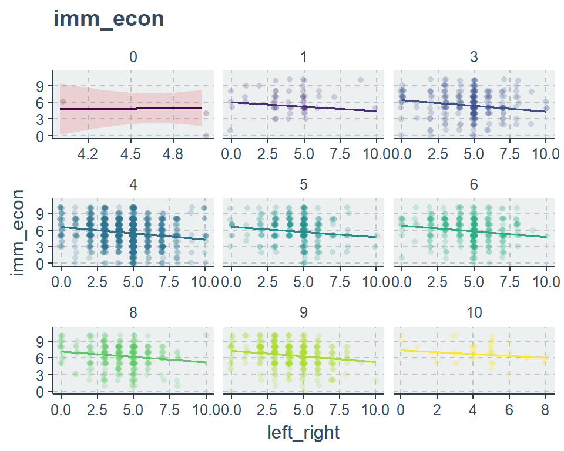
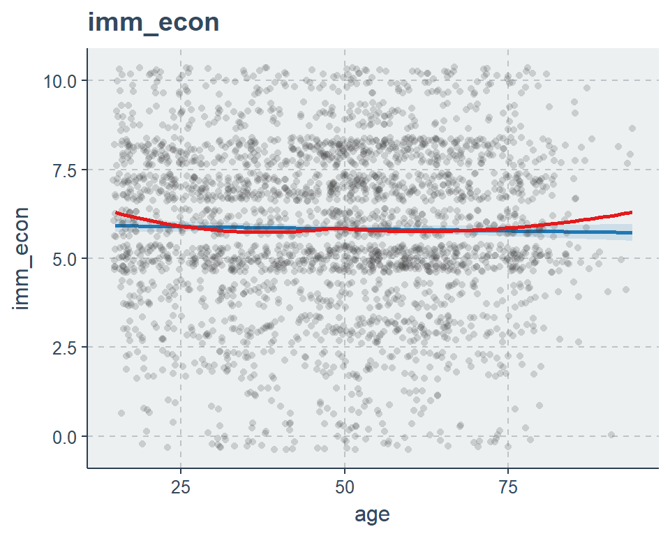

5 Reporting
# load data
load(url('https://github.com/systats/workshop_data_science/raw/master/Rnotebook/data/ess_workshop.Rdata'))
# filter data
library(dplyr)
ess_ger <- ess %>%
dplyr::filter(country == "DE") %>%
mutate(age2 = age*age)
fit0 <- lm(imm_econ ~ 1, data = ess_ger)
fit1 <- lm(imm_econ ~ left_right + vote_right, data = ess_ger)
fit2 <- lm(imm_econ ~ left_right + vote_right + edu + age + gender, data = ess_ger)5.1 Tabellen
5.1.1 stargazer
library(stargazer)
stargazer(list(fit0, fit1, fit2), type = "html")| Dependent variable: | |||
| imm_econ | |||
| (1) | (2) | (3) | |
| left_right | -0.187*** | -0.174*** | |
| (0.024) | (0.024) | ||
| vote_right1 | -1.985*** | -1.991*** | |
| (0.226) | (0.224) | ||
| edu | 0.162*** | ||
| (0.020) | |||
| age | -0.004* | ||
| (0.002) | |||
| genderMale | 0.335*** | ||
| (0.086) | |||
| Constant | 5.831*** | 6.745*** | 5.841*** |
| (0.044) | (0.112) | (0.185) | |
| Observations | 2,817 | 2,740 | 2,721 |
| R2 | 0.000 | 0.059 | 0.087 |
| Adjusted R2 | 0.000 | 0.058 | 0.086 |
| Residual Std. Error | 2.335 (df = 2816) | 2.253 (df = 2737) | 2.221 (df = 2715) |
| F Statistic | 85.459*** (df = 2; 2737) | 52.031*** (df = 5; 2715) | |
| Note: | p<0.1; p<0.05; p<0.01 | ||
5.1.2 texreg
library(texreg)
screenreg(list(fit0, fit1, fit2))##
## ==================================================
## Model 1 Model 2 Model 3
## --------------------------------------------------
## (Intercept) 5.83 *** 6.74 *** 5.84 ***
## (0.04) (0.11) (0.18)
## left_right -0.19 *** -0.17 ***
## (0.02) (0.02)
## vote_right1 -1.98 *** -1.99 ***
## (0.23) (0.22)
## edu 0.16 ***
## (0.02)
## age -0.00
## (0.00)
## genderMale 0.33 ***
## (0.09)
## --------------------------------------------------
## R^2 0.00 0.06 0.09
## Adj. R^2 0.00 0.06 0.09
## Num. obs. 2817 2740 2721
## RMSE 2.34 2.25 2.22
## ==================================================
## *** p < 0.001, ** p < 0.01, * p < 0.05#texreg(list(fit0, fit1, fit2))
#htmlreg(list(fit0, fit1, fit2))5.1.3 sjPlot
- viele weitere Einstellungsmöglichkeiten findest du hier.
library(sjPlot)
sjt.lm(fit0, fit1, fit2, use.viewer = F, show.ci = F, show.se = T)| imm_econ | imm_econ | imm_econ | ||||||||||
| B | std. Error | p | B | std. Error | p | B | std. Error | p | ||||
| (Intercept) | 5.83 | 0.04 | <.001 | 6.74 | 0.11 | <.001 | 5.84 | 0.18 | <.001 | |||
| left_right | -0.19 | 0.02 | <.001 | -0.17 | 0.02 | <.001 | ||||||
| vote_right (1) | -1.98 | 0.23 | <.001 | -1.99 | 0.22 | <.001 | ||||||
| edu | 0.16 | 0.02 | <.001 | |||||||||
| age | -0.00 | 0.00 | .065 | |||||||||
| gender (Male) | 0.33 | 0.09 | <.001 | |||||||||
| Observations | 2817 | 2740 | 2721 | |||||||||
| R2 / adj. R2 | .000 / .000 | .059 / .058 | .087 / .086 | |||||||||
sjt.lm(fit0, fit1, fit2,
use.viewer = F,
show.std = TRUE,
show.ci = F)| imm_econ | imm_econ | imm_econ | ||||||||||
| B | std. Beta | p | B | std. Beta | p | B | std. Beta | p | ||||
| (Intercept) | 5.83 | <.001 | 6.74 | <.001 | 5.84 | <.001 | ||||||
| left_right | -0.19 | -0.15 | <.001 | -0.17 | -0.14 | <.001 | ||||||
| vote_right (1) | -1.98 | -0.17 | <.001 | -1.99 | -0.17 | <.001 | ||||||
| edu | 0.16 | 0.15 | <.001 | |||||||||
| age | -0.00 | -0.03 | .065 | |||||||||
| gender (Male) | 0.33 | 0.07 | <.001 | |||||||||
| Observations | 2817 | 2740 | 2721 | |||||||||
| R2 / adj. R2 | .000 / .000 | .059 / .058 | .087 / .086 | |||||||||
5.2 Show me your model!
With the sjp.lm function you can plot the beta coefficients with confidence intervals as so called “forest plots”.
Als nächstes werden wir fast auschließlich auf das Package sjPlot zurückgreifen um unsere Modelle zu visualiseren.
5.2.1 Coefficient Plot (Forest)
type = "est" is default.
type = "est"Unstandardisierte \(\beta\) Koeffizienten ist voreingestellt.type = "re"For multilevel random effect models.type = "std"Standardisierte Koeffizienten \(\beta^*\).type = "std2"Vorschlag von Gelman durch zwei Standardabweichungen zu Teilen zur besseren Vergleichbarkeit mit Dummies.
library(ggthemr)
library(ggplot2)
ggthemr("flat")
library(sjPlot)
plot_model(fit2)
plot_model(fit2, vline.color = "red", sort.est = T)
plot_model(fit2, show.values = TRUE, value.offset = .3, type = "std2")
library(broom)
rbind(
c("Nullmodel", glance(fit0)),
c("Model 1", glance(fit1)),
c("Model 2", glance(fit2))
)## r.squared adj.r.squared sigma statistic p.value
## [1,] "Nullmodel" 0 0 2.33521 NA NA
## [2,] "Model 1" 0.0587767 0.05808893 2.253388 85.45891 9.963587e-37
## [3,] "Model 2" 0.08744187 0.08576128 2.221265 52.03058 1.115144e-51
## df logLik AIC BIC deviance df.residual
## [1,] 1 -6385.753 12775.51 12787.39 15356.23 2816
## [2,] 3 -6112.462 12232.92 12256.59 13897.82 2737
## [3,] 6 -6029.495 12072.99 12114.35 13395.86 27155.2.2 Marginal Effects
sjp.lm(fit2, type = "eff")
sjp.lm(fit2,
type = "eff",
facet.grid = F,
vars = "left_right")
5.2.3 Predicting values
sjp.lm(fit2, type = "pred", vars = "left_right", point.alpha = .1)
sjp.lm(fit2, type = "pred", vars = c("left_right", "edu"))$plot +
viridis::scale_color_viridis(discrete = T)
sjp.lm(fit2, type = "slope", show.loess = TRUE, vars = "age")